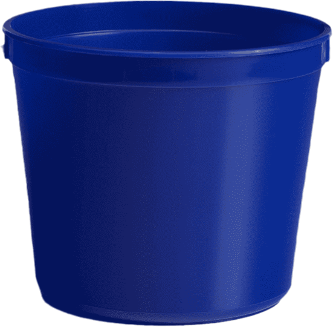

La creacion del juego...
Para la creación del juego, se empezó desde lo mas básico, la lectura del cuento. Luego, partiendo de la base de la aventura grafica pude generar una lluvia de ideas, de la cual la que mas me gusto fue hacer un juego estilo Space Invaders, pero en vez de tener que disparar a naves deberas capturar gotas de agua para ayudar a tus amigos de atasco.
Paso 1: La planeacion
Durante este paso, se comenzo a planifinar el juego final, que elementos de la historia utilizaremos y como los utilizaremos para lograr que sea entretenido. En este caso el protaginista ( bautizado “Bruce” con cariño), se movera de izquiera a derecha de la pantalla con el objetivo de capturar las gotas que caen con un balde azul.
Bruce, un hombre simple, el se movera de izquierda a derecha para lograr su objetivo: ayudar a todos.

Nuestro mejor aliado, con el juntaremos las gotas, deberemos llegar al objetivo antes de que se termine el tiempo!
Lo más preciado, las gotas caen desde una nube que aparecerá en un lugar aleatorio, juntandolas podremos salvar a nuestros compañeros de atasco.
Paso 2: El inicio de la aventura
Aquí, el enfoque fue dirigido a la construcción de la narración de la historia, se comenzaron a generar las imágenes mediante IA (en este caso utilice BingIA), para así poder construir las diferentes pantallas que iban a componer el juego, como por ejemplo las pantallas de victoria/derrota. Además, se empezó a ver algunos detalles de la programación, pero se contara más detalle en el próximo paso.

Paso 3: La programacion
Este paso fue el mas complicado de todos, se dio comienzo a la programación. Decidi utilizar cuatro objetos para la construcción de nuestro juego, los cuales cada uno iban a cumplir un rol fundamental para que este pudiera finalmente funcionar. A continuación se explicara a gran escala que rol cumple cada uno de ellos.

El encargado de manejar las pantallas, posee parámetros para la ubicación en la que se dibuja, su ancho y alto, y la variable pantalla que va a manipular en que pantalla estas.
Lo que hace es manejar la posición de la nube y la posición de la gota que tenes que agarrar. Se encarga de dibujar una nube en una posición random del eje x y de dibujar gotas, agregándoles un movimiento y una cierta velocidad. Además de reiniciar la posición de la gota para dar la impresión de una lluvia constante.
Este objeto llama al objeto juego para poder acceder a sus variables. Ademas se encarga de manejar a nuestro personaje y analiza si agarraste las gotas o si termino el tiempo. Dentro de este encontramos diferente parámetros y lo mas importante las variables boleanas que nos dirán si ganamos o perdemos.
Por ultimo, el objeto pantallas, este maneja todo, seria como un draw. Toma la variable pantallas_ del botón y las usa para navegar en las distintas pantallas. Además reinicia las variables cuando se reinicia el programa.
Paso 4: El final
Una vez se finalizo con toda la programación, clickeando en su respectivo balde ustedes podrán disfrutar de la aventura grafica (en caso de querer tener mas contexto) o del juego.